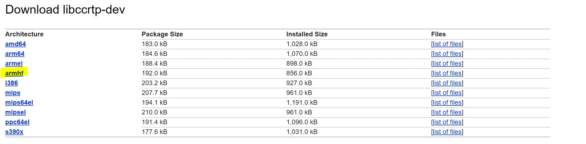

Today I started a blog. I'm not sure if it will be program specific, or dev specific, or specific at all. I don't even know if I will keep itreading, but I will at least write and commit this entry.
This blog is (will be) hosted on github, initially as a markdown file but later as a website (through github pages).
Anyway I've been wanting to list my struggles; my learnings;-and-; my victories. It is important to anchor your path by remembering the beginnings.
The project started. I set out to work with what seems like the only library for RTP and RTSP protocol. GNU's ccRTP library is exactly what I need, but in C++ instead of Java. However, it does have a benefit over any Java product: it will be much lighter, and portable. Since it is my intention to have Radio run on various types of devices, even very small one, and to have various servers on a cloud, a lightweight program will help keep costs low and provide easy scability. In this fashion I decided to build a C++, Linux program.
I decide OK, ccrtp it is. I hit Download from GNU's website and what I downloaded was the source code. It did not dawn on me that the source was not the binaries, and I simply assumed I had to compile it.
Long story short, I have to go through hours, days, of learning how to compile from source on Linux.
I learn about configure, I start to learn about cmake, and I spend a very long time trying to
find the dependencies for compiling libccrtp. It took me very long to find and download
libcommoncpp, libucommon, gcrypt, etc. I finally get a handle of apt, learn the purpose of
configure, and get Makefile to compile successfully.
Then, late at night in bed, feeling proud of myself and finally ready to start actually coding, I come across the thought that "maybe, just maybe, I should search for the ccrtp's binary." What I found was both funny and disappointing:
$ apt search libccrtp
Sorting... Done
Full Text Search... Done
libccrtp-dev/stable 2.0.9-2.3 amd64
Common C++ class framework for RTP packets - development files
libccrtp-doc/stable,stable 2.0.9-2.3 all
Documentation files for GNU ccRTPp library
libccrtp2v5/stable,now 2.0.9-2.3 amd64 [installed,auto-removable]
Common C++ class framework for RTP packets
Whatever. At least I learned a lot along the way.
Another day, another bump on the way. This bump, however, was more of a warning than an error and, while I was able to proceed without fixing it, the consequence was very annoying.
When I setup my Visual Studio cmake project, specified it will be cross-compiling using Windows Subsystem for Linux (WSL), and specified the include directories on CMakeLists.txt, Visual Studio seemed to accept everything fine and well (no errors or warnings), and I was able to compile my project without issues, however Visual Studio just couldn't seem to find the proper header symbols. Everything had a red squigly line under it.
After much research I finally began to understand what Visual Studio does to load the symbols, and why it was able to compile but not resolve any symbols locally.
When creating a cmake project, in the CMakeSettings.json file there is an optional entry:
remoteCopyAdditionalIncludeDirectories. Visual Studio goes into the directories specified in this
entry and copies all files to a local directory, and uses those files to resolve any necessary
symbols. The files are stored to %USERPROFILE%\AppData\Local\Microsoft\Linux\HeaderCache\1.0.
When I navigated to that directory, there was a single directory wsl_debian, which is the system
I am using for the compiling the project. Inside the directory, however, there were none of the
expected header files. For some reason, Visual Studio simply refuses to copy the necessary files
from the WSL system to this directory, so I tried a different approach: using Visual Studio's remote
system option.
Visual Studio's remote system allows the user to develop on one machine and compile on another, remotely. It is essentially what it is doing with the WSL setup, but using SSH to communicate with the remote server. The logic is the same: copy the remote includes to a local directory so intellisense can do its intellisensing.
I installed the SSH daemon on my Linux (WSL) system and set up the remote system connection on Visual Studio. I then change the CMakeSettings to use the remote system instead of WSL and let Visual Studio and CMake do their thing.
I checked the header cache directory again and found that this time there were 2 folders: the WSL one that already existed and another one with random numbers. The random number one, at last, had the header files I needed. I copied the header files to the WSL directories and everything worked, finally.
So, the moral of the story here is: just copy the necessary headers into the local header cache directory. There is no need for the remote system setup, that's just how I managed to get to this conclusion.
Armed with the beautiful libccrtp I write a simple client/server program to get familiar with both the library and the protocol. I set up wireshark to monitor the transmission of data and after many mistakes I am finally able to send a file from the client to the server. Great success! I am now ready to drop this into my Android APK and finally get things going!
Except I'm not...
While getting familiarized with Android's native development kit (NDK) I learn that I overlooked a pretty big flaw in my portability assessment: I need the c++ libraries built for each target triplet.
I find that my phone, an old piece of junk, runs on a 32bit ARM processor with hardfloat support. My brain defaults to "I need to compile libccrtp targetting ARMHF." And that's what I set out to do.
After an obscene amount of time trying to cross compile libccrtp, realizing that for this build to work I need all the dependancies also targetting ARMHF, trying to build libucommon from source, I finally came across an important finding:
Almost like a glitch in the matrix, I am back at the exact same place I was many, many hours ago, with only the small intellectual advance that I need to target ARM architecture. Still, progress is progress. Let's download this:
$ sudo apt install libccrtp-dev:armhf
Reading package lists... Done
Building dependency tree
Reading state information... Done
E: Unable to locate package libccrtp-dev:armhf
WHAT? Ok, I need to add the architecture to dpkgs arch list. Fine, let's do it:
$dpkg --add-architechture armhf
Awesome, now let's get that library!
$ sudo apt install libccrtp-dev:armhf
Reading package lists... Done
Building dependency tree
Reading state information... Done
E: Unable to locate package libccrtp-dev:armhf
Hmm. Still nothing? Well, let me save you the headaches and frustrations...
After adding a new architecture to dpkg we need to update apt's package list on and then apply
the updates. To do this we just need to call:
apt update && apt upgrade
Now apt should have pulled the list of armhf packages, so we try, again:
$ sudo apt install libccrtp-dev:armhf
Reading package lists... Done
Building dependency tree
Reading state information... Done
The following packages were automatically installed and are no longer required:
...
Yes! It worked! We can verify by checking the contents of the package:
$ dpkg -L libccrtp-dev:armhf | grep libccrtp.so
/usr/lib/arm-linux-gnueabihf/libccrtp.so
Ok, finally! I am ready! Watchout Android, here I come!